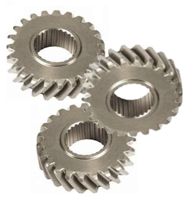

The world we interact in everyday and the technology we utilize are built upon the foundation of embedded systems. The Robotics and Embedded Systems degree provides students with the engineering foundation for the design, implementation, and analysis of embedded systems, with an empasis in autonomous robotic systems. Building upon the foundation of software engineering, a degree in Robotics and Embedded Systems can span mechanical design, digital logic design, embedded programming, machine vision, and adaptive algorithm development and design of autonomous robotic systems.
1. Design and complete robotic and embedded systems solutions
that apply to real-world situations and challenges.
2. Implement a simple microprocessor using digital logic design.
3. Demonstrate embedded systems design skills, including, but
not limited to, microcontroller selection, schematic design,
printed circuit board layout, design for electromagnetic
compatibility and design for manufacturing.
4. Apply knowledge of transducers, actuators and simultaneous
hardware and software development in the design of an embedded
system.
5. Design and analyze real-time embedded systems, including
advanced digital logic design, signal processing and high-speed
digital systems.
6. implement and evaluate algorithms and methods enabling
autonomy in a mobile robot.

|
|